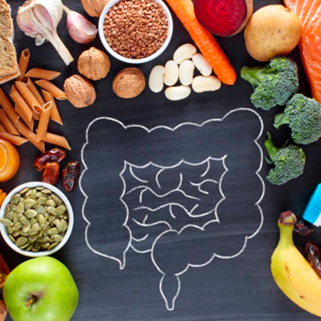
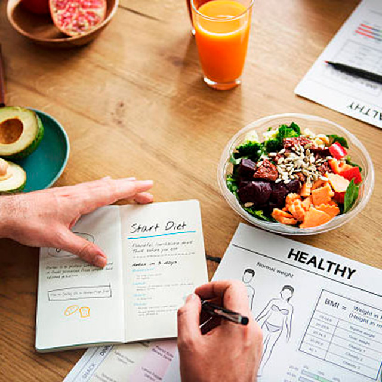

vejledning

Vejledning til din forstoppelse
Kostplan og klinisk vejledning til dig, som føler
dig oppustet og utilpas
Vidste ud at:
"En irritabel eller nervøs tyktarm er en meget almindelig tilstand. Cirka hver 10 dansker har i perioder problemer med en irritabel tyktarm. Sygdommen er hyppigst hos kvinder? "
Samtaler og konsulationer
Tager udgangspunkt i dine ønsker og symptomer.
Der er en kvalificeret tilgang til dine behov og sygdomme
Vidste ud at:
"Ernæring - en vigtig del af livet og en nødvendighed for at overleve. Vægttab og nedsat appetit giver anledning til bekymring hos såvel den kræftsyge som hos familie og andre pårørende. "

Hjælp til ernæring ved vægttab, underernæring og sygdom
Vejledning i den rette ernæring kan være med
til at øge din vægt og funktionsniveau.
Vidste ud at: